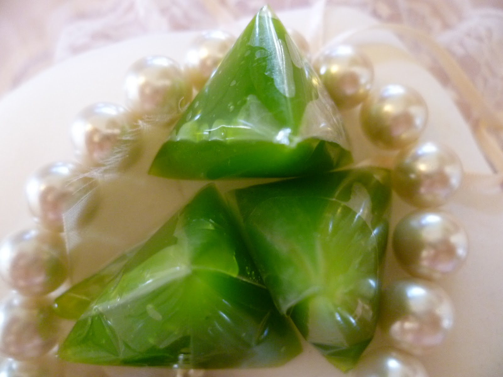
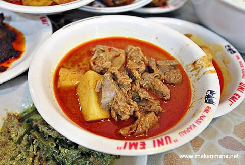

Perkembangan Wisata Kuliner di Kota Medan dan Sekitarnya
Brotherhood TIM
Nama kelompok
- Imran Permadi
- Muhammad Erfahd Yafizham
- Martin Erikson
- Windy Ardilla
Jenis Kuliner di kota Medan
Medan hadir dengan berbagai macam kuliner.
Aneka ragam kuliner tersebut dapat berupa jenis mie dengan seafood, minuman, kare, gulai, kue, roti dan lain-lain. Apa jenis makanan enak di medan? Keunikan makanan khas dari sebuah daerah merupakan salah satu daya tarik sendiri bagi para wisatawan. Selain tempat wisata, biasanya wisatawan selalu hunting makanan khas di malam hari atau di sela-sela berkunjung ke lokasi wisata. Medan sebagai kota yang memiliki ciri khas tersendiri, juga memiliki berbagai menu makanan enak yang harus dicoba ketika singgah di kota Medan. Bahkan ada beberapa makanan enak di Medan yang menjadi oleh-oleh wajib untuk dibawa pulang jika mau dianggap sudah pergi ke Medan. Makanan enak apa saja di kota Medan? simak ulasannya di bawah ini.
Ada berbagai jenis makanan enak di Medan, mulai dari cemilan sampai makanan berat. Kamu bisa mencobanya satu persatu untuk merasakan sendiri makanan mana yang menurutmu paling enak di Medan. Jika kamu bingung dari mana untuk memilihnya, di tulisan kali ini akan dibahas mengenai berbagai jenis makanan enak di Medan. Kamu bisa menggunakannya untuk referensi wisata kuliner ketiga pergi ke Medan.

Yang pertama dari jenis makanan camilan atau bisa digunakan untuk oleh-oleh yakni Bolu gulung Meranti. Roti satu ini kini sudah menjadi semacam trade mark kota Medan. Kamu harus membawa Bolu Gulung Meranti jika ingin diakui kalau sudah pergi Medan. Kue bolu Meranti tersebut sepertinya sama saja dengan kue bolu lainnya. Namun setelah memakannya, lidah tidak akan pernah bohong untuk mengatakan bahwa bolu gulung Meranti memiliki rasa khas yang berbeda dengan bolu lainnya. Bolu Gulung Meranti terdiri dari berbagai macam rasa yakni blueberry, mocha, keju dan rasa lainnya. Jika ingin membeli berbagai varian rasa tersebut namun tidak ingin keluar banyak uang, memesan satu kotak dengan berbagai varian rasa bisa dijadikan pilihan. Namun jika membeli berbagai varian rasa dalam satu kotak, maka porsinya akan lebih sedikit daripada beli secara terpisah. Kamu bisa membelinya di toko pusat yang beralamatkan di Jl. Kruing No. 2-K, Medan dengan nomor telepon(061)4538217.

Adapun kuliner jajanan makanan ringan yang paling mantap adalah risol GOGO. Risol gogo merupakan kuliner ringan di medan yang sangat di minati warga kota medan. Risol gogo umum nya sama seperti risol biasa hanya saja yang membedakan isinya. Isinya ada sayuran seperti irisan bengkuang, wortel, mayones, ayam dan daging. Untuk harga risol gogo sangat bersaing yaitu Rp. 2500,-/pcs nya. Selain Risol ada juga kue-kue lainnya yang tersedia di risol gogo seperti kue lemper, sus, dan kroket. Untuk harga sendiri semuanya sama dengan risol yaitu Rp. 2500,-. Outlet Risol gogo ini terletak di jalan mojopahit no. 53 medan, Risol gogo buka setiap hari mulai dari pukul 08.00 – 20.00 wib. Bagi anda yang mempunyai kesibukan yang tinggi dan tidak sempat mengunjungi outlet risol gogo anda dapat memesannya melalu telp dan nantinya pesanan anda akan di antar ke alamat yang dituju. Untuk pemesanan melalui telp bisa menghubungi no telp 061-4525398 / 061-4146620.
Kuliner jajanan ringan bakpao muslim seperti kita ketahui biasanya yang namanya bakpao identik dengan makanan khas Tionghoa yang biasanya non-halal. Namun di kota Medan ada kuliner yang namanya bakpao muslim. Bakpao ini sama seperti bakpao biasanya. Tetapi bakpao muslim memiliki aneka rasa seperti ayam, coklat, keju, blueberry, strawberry dan kacang. Dan yang pastinya bakpao ini 100% halal. Untuk yang berminat mencoba kenikmatanya, silahkan datang ke kedai bakpao muslim.
Adapun wisata kuliner dengan berbagai macam kue dan roti.
Kue dan Roti yang ada pada wisata kuliner kota medan yaitu Di Pasar Bengkel. Dengan adanya sentra oleh-oleh pasar bengkel ini, secara langsung menambah pendapatan masyrakat sekitar maupun pendapatan daerah sekitar pasar bengkel. Serdang Bedagai merupakan kabupaten penghubung antar kota medan dengan provinsi yang berada di sebelah selatan sumatera utara dan merupakan jalur utama ke kota medan, jadi pasar bengkel merupakan tempat persinggahan yang banyak didatangi oleh orang yang dalam perjalanan.

Dari semua jenis dodol dan rasanya yang paling digemari di kota medan adalah Dodol Durian dan Dodol Pandan. Dodol yang tersedia dalam beberapa rasa seperti durian dan pandan,membuat para pemudik ramai singgah ke pasar bengkel, sebelumnya melanjutkan perjalanan ke tempat tujuan.
Bagi anda yang ingin berburu kuliner di Serdang Bedagai,sebaiknya mencoba kelezatan dodol Pasar Bengkel dengan harga yang terjangkau. Adapun cara pengolahan dodol durian sebagai berikut.
Bahan:
• 1 Kg durian
• 500gr gula pasir.
Cara membuat:
1. Kupas durian yang sudah masak, ambil dagingnya. Masukkan ke dalam kuali, jerang diatas apii sambil diaduk-aduk agar tidak berkerak. aduk hingga warnanya kekuning-kuningan.
2. Masukkan gula, terus aduk hingga warnanya coklat kehitaman-hitaman dan kering. lalu angkat dan dinginkan.
3. Kemas dalam plastik, tunggu sampai dingin, baru potong, lalu dodol pun siap untuk disajikan.

Adapun cara pengolahan dodol pandan sebagai berikut.
Bahan :
1. 1 Kg tepung beras ketan.
2. 700gr gula pasir.
3. 1 ¼ liter santan.
4. 700gr gula merah.
Cara membuat :
1. Pertama kita masukkan gula pasir, gula merah, santan dan daun pandan. Aduk terus supaya santan tidak pecah. Masak hingga mendidih hingga gula larut, lalu saring.
2. Masak kembali bersama dengan tepung beras ketan, aduk rata dengan api yang kecil, masak hingga matang dan mengental, serta tidak lengket di wajan. Proses ini biasanya memakan waktu lebih dari 5 jam.
3. Kemas dalam plastik, tunggu sampai dingin lalu potong dan dodol pun siap disajikan.

Kare dan Gulai juga merupakan ciri khas makanan di medan yang paling digemari
Kare kambing dan Gulai ikan Mas adalah masakan paling lezat di kota ini. Salah satu rumah makan paling lezat di kota Medan adalah rumah makan Tabona. Sebagai rumah makan yang menjadi legendaris menu kari di Medan, tidak mengherankan kalau pelanggan setianya selalu datang untuk bernostalgia menikmati kuliner hasil racikan homemade yang dibuat secara turun-temurun. Travelers, biar tidak penasaran, datang saja ke Jalan Mangkubumi no 17 Simpang Kol. Sugiono Medan. Harga menu kari cukup bervariasi, mulai dari Rp26.000 per porsi.
Bagi para pecinta masakan Padang, rumah makan Uni Emi yang terletak di jalan Glugur simpang Petisah ini sudah pasti menjadi salah satu hotlist masakan padang favorit kota Medan. Dengan rumah makan yang senantiasa ramai setiap tengah hari, kami mampir untuk menjawab rasa penasaran kami. Tidak perlu lama bagi kami untuk turut mengiyakan mengapa rumah makan yang terkenal dengan ayam goreng dan kari kambing ini adalah salah satu jagonya dalam mengolah bumbu dan rempah pedas nan gurih khas padang. Dengan tekstur ayam goreng yang garing dan tidak terlalu gemuk, serta kari kambing yang lembut nan lezat sudah pasti akan membawa kami kembali lagi di lain waktu.
